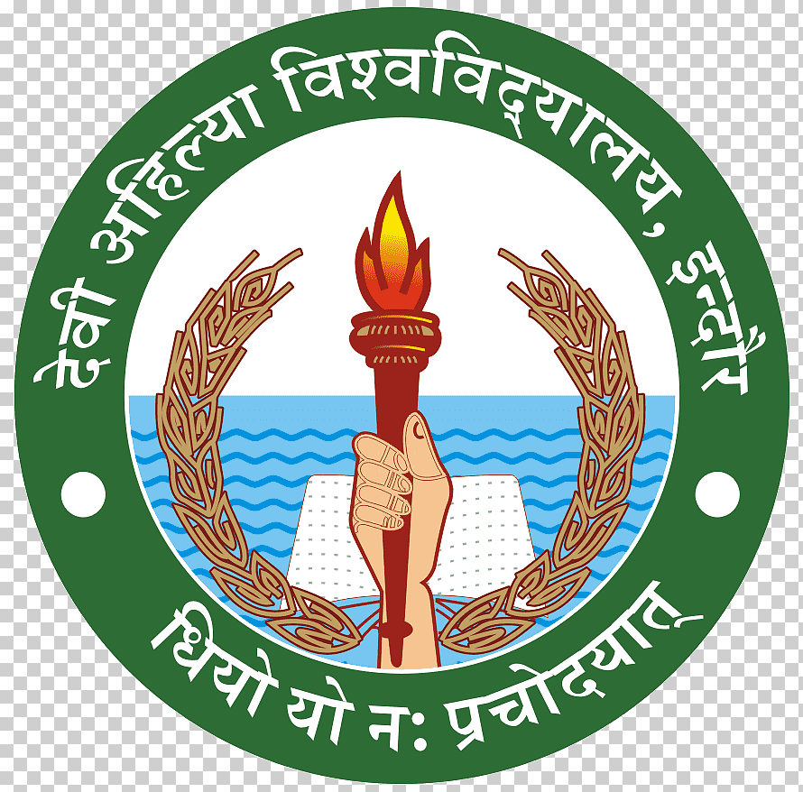

The Institute of Engineering and Technology (IET), Devi Ahilya Vishwavidyalaya, Indore, is one of the leading engineering institutes in Madhya Pradesh. Established with the objective of providing quality technical education, the institute has consistently worked towards academic excellence and professional growth of students.
IET DAVV offers a vibrant learning environment supported by experienced faculty members, well-equipped laboratories, modern infrastructure, and industry-oriented curriculum. The institute focuses on developing technical competence, analytical thinking, innovation, and ethical values among students.
The college encourages students to participate in technical activities, research projects, internships, workshops, seminars, and cultural events. This holistic approach helps students gain practical exposure and prepares them for real-world engineering challenges.
With strong emphasis on academic rigor and overall personality development, IET DAVV aims to produce skilled engineers and responsible professionals who can contribute effectively to society and the nation.